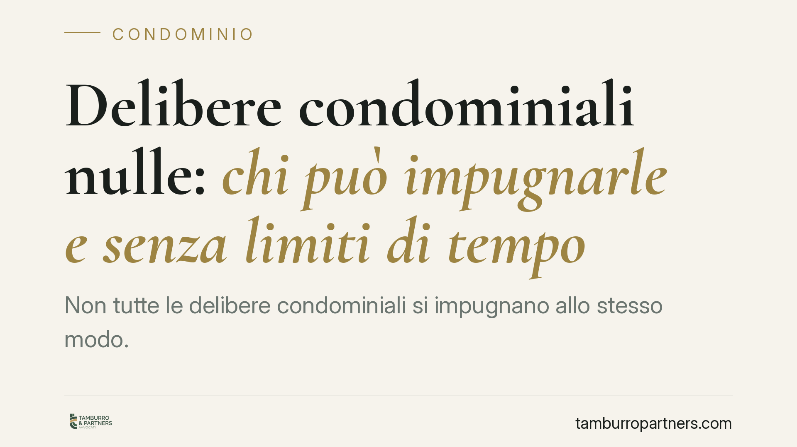

Delibere condominiali nulle: chi può impugnarle e senza limiti di tempo
Non tutte le delibere condominiali si impugnano allo stesso modo. Quelle annullabili vanno contestate entro trenta giorni; quelle nulle possono essere fatte valere in ogni tempo da chiunque vi abbia interesse. La distinzione, consolidata dalle Sezioni Unite, incide sui tempi e sulla legittimazione ad agire. Vediamo cosa cambia in concreto per condòmini, amministratore e terzi.

Il principio: due regimi, due tutele diverse
Le deliberazioni dell'assemblea condominiale non sono tutte vulnerabili allo stesso modo. Il nostro ordinamento distingue tra delibere annullabili, soggette a un termine breve di decadenza, e delibere nulle, prive di efficacia in radice e contestabili senza limiti di tempo.
La distinzione non è un tecnicismo accademico: determina chi può agire, entro quando e con quale azione processuale.
Inquadramento normativo
Il riferimento centrale è l'art. 1137 c.c., che disciplina l'impugnazione delle delibere contrarie alla legge o al regolamento condominiale. La norma riserva questo rimedio ai condòmini assenti, dissenzienti o astenuti, e impone un termine di trenta giorni (decorrente dalla delibera per chi era presente, dalla comunicazione del verbale per gli assenti). Scaduto il termine, la delibera annullabile si consolida e diventa definitiva.
Diverso è il regime della nullità, che segue le regole generali dell'art. 1421 c.c.: può essere fatta valere da chiunque vi abbia interesse ed è rilevabile d'ufficio dal giudice. Non esiste termine di decadenza.
La linea di confine tra le due categorie è stata tracciata in modo sistematico da Cass. Sez. Un. n. 4806/2005, tuttora leading case in materia. Secondo questo insegnamento, sono nulle le delibere prive degli elementi essenziali, con oggetto impossibile o illecito, che incidono su diritti individuali sul bene comune o che modificano criteri di ripartizione in deroga a quelli legali senza il consenso unanime. Sono invece annullabili quelle con vizi di procedimento (convocazione, maggioranze, verbalizzazione) o comunque contrarie a norme che richiedono una tempestiva contestazione.
La posizione del terzo estraneo: una precisazione necessaria
Su questo punto occorre essere precisi, perché l'equazione "chiunque può impugnare" rischia di generare equivoci.
L'impugnazione ex art. 1137 c.c. resta un rimedio riservato ai condòmini. Il terzo estraneo al condominio non è legittimato a utilizzare questo strumento.
Il terzo che vanti un interesse concreto e attuale può però agire con l'azione ordinaria di accertamento della nullità ex art. 1421 c.c. Si tratta di una tutela diversa per forma e presupposti: non un'impugnazione soggetta a termini, ma una domanda volta a far dichiarare che la delibera non ha mai prodotto effetti.
La pronuncia recente della Cassazione (Sez. II) in materia — di cui raccomandiamo la verifica degli estremi definitivi prima di qualsiasi citazione processuale — si muove in questa direzione: conferma che, riguardo alle delibere nulle, la legittimazione ad agire si estende oltre la cerchia dei condòmini, purché sussista un interesse giuridicamente apprezzabile. Nel caso esaminato la contestazione riguardava una delibera idonea a incidere su posizioni soggettive di soggetti non partecipanti alla compagine condominiale. Il principio ribadito non introduce novità dirompenti, ma rafforza l'orientamento tradizionale.
Implicazioni pratiche
Per il condòmino cambia la strategia difensiva. Di fronte a una delibera sgradita, la prima valutazione riguarda la natura del vizio: se annullabile, il tempo è tiranno e trenta giorni passano in fretta; se nullo, l'azione resta esperibile anche dopo anni, ma occorre dimostrare la radicalità del difetto.
Per l'amministratore l'insegnamento è di metodo: una delibera formalmente approvata non è necessariamente al riparo da contestazioni. Le decisioni su ripartizione delle spese, lastrici, parti comuni e diritti individuali vanno istruite con particolare cura.
Per il terzo (creditore, confinante, acquirente, fornitore) si apre uno spazio di tutela, ma circoscritto: non un'impugnazione libera, bensì un'azione di accertamento che presuppone un interesse qualificato.
Cosa fare in concreto
- Condòmino: qualifica subito il vizio. Se è annullabile, attiva l'impugnazione entro trenta giorni dalla comunicazione del verbale, senza attendere.
- Condòmino: per i vizi sostanziali (ripartizione in deroga, diritti sul bene comune), valuta l'azione di nullità, imprescrittibile ma più complessa sul piano probatorio.
- Amministratore: verbalizza con precisione convocazione, presenze e maggioranze; conserva le prove delle comunicazioni per rendere decorrere il termine ex art. 1137 c.c.
- Terzo interessato: non confondere impugnazione e accertamento; documenta l'interesse concreto prima di promuovere l'azione di nullità.
- Tutti: prima di agire, acquisisci copia integrale del verbale e del regolamento; la qualificazione del vizio è decisiva per la scelta del rimedio.
Consigliamo di far esaminare la delibera da un professionista nei giorni immediatamente successivi all'assemblea: il margine temporale per l'impugnazione è breve e non recuperabile.
Ogni condominio ha una storia a sé.
Se gestisci un'amministrazione e vuoi un confronto su una specifica questione condominiale, scrivi allo studio. Ti rispondiamo entro un giorno lavorativo.